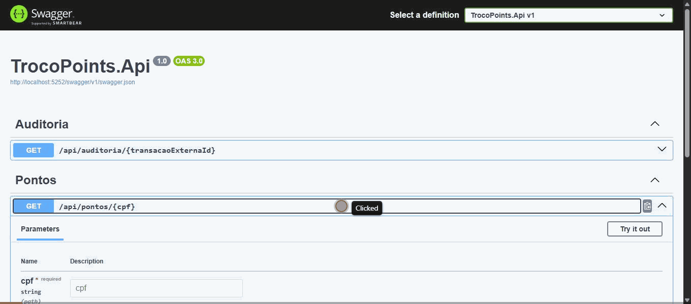
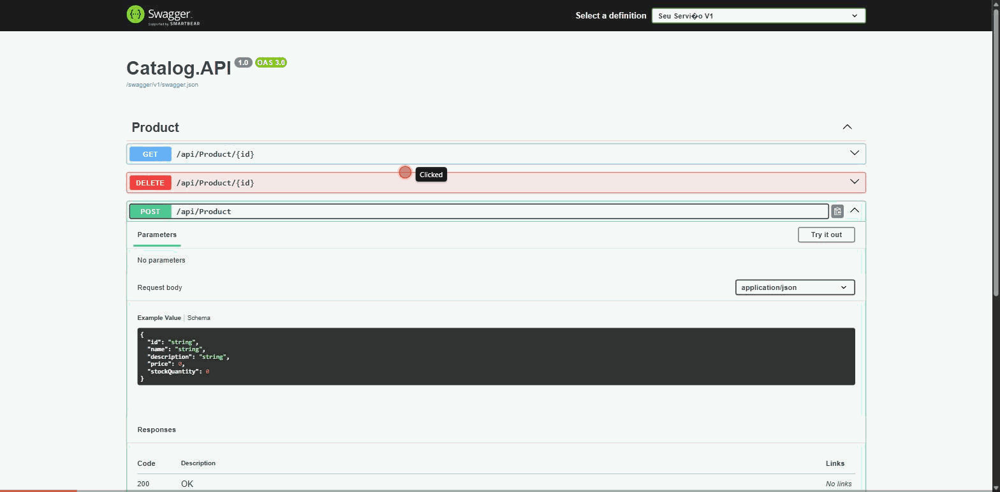
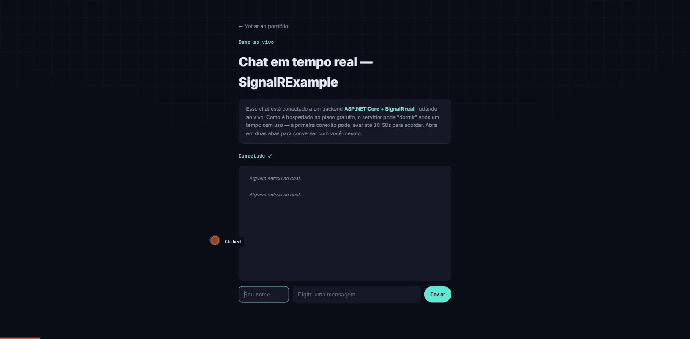
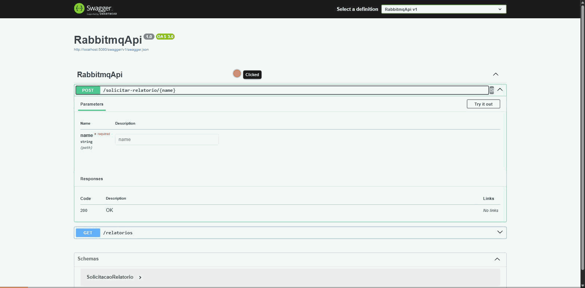

Portfolio and study projects with public code on GitHub — architecture designed for production, not just prototypes.
TrocoPoints
Clean Architecture

A loyalty platform that converts purchase change into points tied to a customer ID. The API validates and persists transactions in Oracle idempotently using the outbox pattern; a Worker consumes events via RabbitMQ and credits points, with a dead-letter queue for failures.
.NET 8OracleMongoDBRabbitMQRedisOpenTelemetryTestcontainers
View on GitHub →
WhatsAppPlatform
API + Worker
A WhatsApp integration platform structured in layers (Domain, Application, Infrastructure, API, and Worker), deployed on AWS — designed to process messages asynchronously and at scale.
.NETWorker ServiceAWSClean Architecture
View on GitHub →
EcommerceApp
Microservices

A microservices-architecture API communicating via Kafka: Catalog, Order, and Notification services, MongoDB database, Azure deployment, and a CI/CD pipeline with GitHub Actions.
KafkaMongoDBDockerAzureGitHub Actions
View on GitHub →
EventDrivenDesignExample
Architecture
A teaching example of event-driven architecture in .NET, with clear layer separation (Domain, Application, Infrastructure) to demonstrate the flow of domain events.
.NETDDDEvent-Driven
View on GitHub →
SignalRExample
Real-time

A real-time chat built with SignalR on an ASP.NET Core API, consumed by an Angular front-end — bidirectional communication over WebSockets.
SignalRASP.NET CoreAngular
RabbitmqApi
Messaging

A REST API with an asynchronous consumer that reacts to events published via RabbitMQ to generate reports on demand, without blocking the original request.
.NETRabbitMQDocker
View on GitHub →
ParallelismDemo
Async
Hands-on studies of asynchronous and parallel programming patterns in C#, applied to batch-processing scenarios.
C#Task Parallel Library
View on GitHub →
ApiGateway
Gateway
A .NET API Gateway built with Ocelot, routing and aggregating calls to internal services, with health checks and resilience via Polly (retry/circuit breaker).
.NETOcelotPollyHealth Checks
View on GitHub →
ImportFlow
Pipeline
A high-throughput file import pipeline (target: 1 million rows in under 2 hours), built with Clean Architecture, CQRS, the outbox pattern, and an async worker for background processing.
.NET 10CQRSOutboxClean ArchitectureDocker
View on GitHub →